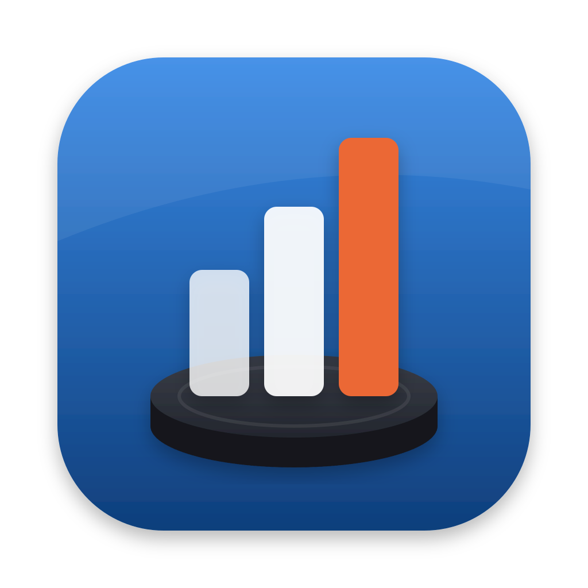

Hockey StatsDrop in your InStat game reports and see which lines and defence pairs work, who's playing well, and what to work on in practice.
Hockey Stats is a Mac app. Open this page on your Mac to download it.
Set it up (about 2 minutes)
-
Open the download
Click Hockey-Stats-mac.dmg in your browser's downloads (or in your Downloads folder). A window opens showing Hockey Stats and your Applications folder.
-
Drag Hockey Stats onto Applications
That installs it. You can then close the window and eject "Hockey Stats" from the sidebar of any Finder window.
-
Open it first time only
Open your Applications folder and double-click Hockey Stats. Your Mac will say it can't check the app, because it isn't from the App Store. That's expected:
- Click Done.
- Open the Apple menu › System Settings › Privacy & Security.
- Scroll down and click Open Anyway next to "Hockey Stats was blocked", then enter your Mac password.
- On older Macs: right-click Hockey Stats, choose Open, then Open again.
-
Pick your team and add a game
Your web browser opens Hockey Stats. Click your team, then drag in the two InStat PDFs for a game (the Match report and the Players' report). Games are remembered, so next time you only add the new one.